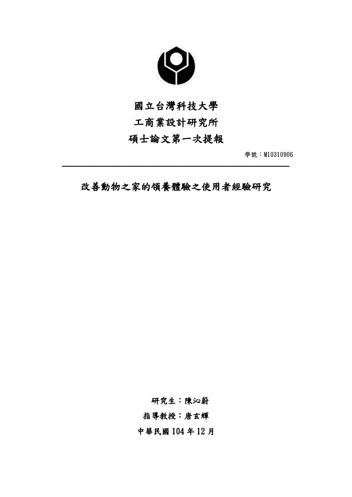

Created Oct 27, 2016 at 2:21 AM 11/3 lab meeting When Thursday, November 03, 1:30am - 4:00am UTC With Danyang Wang 王丹陽, Eva Yu 游硯雅, and Hsien-Hui Tang 唐玄輝 Notes -請沁蔚(第一章)＋丹陽提交＋新同學分享-ASUS 前期提要＋後測時程規劃 （小葵）-文獻分享 Comments & Events Zen 育涓 張, 產品經理 請大家愛看note 歐 👏 Nov 01, 2016 at 4:46 AM Notified 16 people Zen 育涓 張, 產品經理 請問紫綺，學悅的報告是否也能分享一下呢？ （完成度不用100% 沒關係）11/8（二） 要到對方公司簡報 Nov 01, 2016 at 6:44 AM Notified 16 people Sallie 王紫綺, 打掃阿姨 報告還在整皮中～～連結如下：https://goo.gl/oKEFb7 Nov 01, 2016 at 6:11 PM Notified 16 people Danyang Wang 王丹陽, 博士生 題目： 用戶體驗的方法與實踐研究 問題： 如何發掘用戶的真實需求，給用戶帶來好的使用體驗逐步受到重視。目前尚無科學完整的用戶體驗設計方法，以及評價用戶體驗好壞的檢核體系供企業使用。 目標與目的： 結合互聯網平台，在廣泛而高效的用戶反饋信息中挖掘用戶真實需求，探討獲取良好用戶體驗的設計方法與流程。 1. 優良用戶體驗文本分析（用戶體驗檢核表）。 2. 對用戶需求進行質性研究，并量化分析成效測試結果，嘗試以螺旋模式尋得營造優良用戶體驗的科學方法與設計原則。 預期成果： 1. 科學高效地通過反饋信息挖掘獲取用戶真實需求。 2. 構建獲取良好用戶體驗的設計方法與原則。 Nov 02, 2016 at 3:11 PM Notified 16 people Hsien-Hui Tang 唐玄輝, 總監 丹陽文本分析的意義要弄懂。科學高效地通過反饋信息挖掘獲取用戶真實需求。 --> 不是預期成果目標例如1. 分析現有用戶體驗檢測表與檢測方式的優劣2. 建立符合用戶體驗與服務設計概念的用戶體驗檢測表與檢測方式3. 評估此用戶體驗檢測表與檢測方式的效果、效率、滿意度預期成果再試試～ 👏 Nov 02, 2016 at 3:16 PM Notified 16 people Chin-Wei 陳沁蔚, 在職班碩士生  陳沁蔚_第一章論文.pdf 407 KB • Download Nov 03, 2016 at 1:39 AM Notified 16 people Peiying Lin 林佩穎, 碩士生 今日簡報及小任務連結：https://3.basecamp.com/3127495/buckets/1165095/messages/279940434 Nov 03, 2016 at 3:41 AM Notified 16 people
Zen 育涓 張, 產品經理 請問紫綺，學悅的報告是否也能分享一下呢？ （完成度不用100% 沒關係）11/8（二） 要到對方公司簡報 Nov 01, 2016 at 6:44 AM Notified 16 people
Danyang Wang 王丹陽, 博士生 題目： 用戶體驗的方法與實踐研究 問題： 如何發掘用戶的真實需求，給用戶帶來好的使用體驗逐步受到重視。目前尚無科學完整的用戶體驗設計方法，以及評價用戶體驗好壞的檢核體系供企業使用。 目標與目的： 結合互聯網平台，在廣泛而高效的用戶反饋信息中挖掘用戶真實需求，探討獲取良好用戶體驗的設計方法與流程。 1. 優良用戶體驗文本分析（用戶體驗檢核表）。 2. 對用戶需求進行質性研究，并量化分析成效測試結果，嘗試以螺旋模式尋得營造優良用戶體驗的科學方法與設計原則。 預期成果： 1. 科學高效地通過反饋信息挖掘獲取用戶真實需求。 2. 構建獲取良好用戶體驗的設計方法與原則。 Nov 02, 2016 at 3:11 PM Notified 16 people
Hsien-Hui Tang 唐玄輝, 總監 丹陽文本分析的意義要弄懂。科學高效地通過反饋信息挖掘獲取用戶真實需求。 --> 不是預期成果目標例如1. 分析現有用戶體驗檢測表與檢測方式的優劣2. 建立符合用戶體驗與服務設計概念的用戶體驗檢測表與檢測方式3. 評估此用戶體驗檢測表與檢測方式的效果、效率、滿意度預期成果再試試～ 👏 Nov 02, 2016 at 3:16 PM Notified 16 people
Peiying Lin 林佩穎, 碩士生 今日簡報及小任務連結：https://3.basecamp.com/3127495/buckets/1165095/messages/279940434 Nov 03, 2016 at 3:41 AM Notified 16 people
（完成度不用100% 沒關係）
11/8（二） 要到對方公司簡報
連結如下：https://goo.gl/oKEFb7
文本分析的意義要弄懂。
科學高效地通過反饋信息挖掘獲取用戶真實需求。 --> 不是預期成果
目標例如
1. 分析現有用戶體驗檢測表與檢測方式的優劣
2. 建立符合用戶體驗與服務設計概念的用戶體驗檢測表與檢測方式
3. 評估此用戶體驗檢測表與檢測方式的效果、效率、滿意度
預期成果再試試～
https://3.basecamp.com/3127495/buckets/1165095/messages/279940434